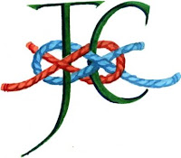

| Mary "great with child" |
{kind=link}
Mum can’t remember the Christmas story any more, she thinks. “Who are these people, Jul?” she asks,
looking at one of the Christmas cards she’s chosen. We set out her nativity crib with the same little figures and animals that she arranges into stories every year. She is delighted at first but then she begins to worry: “People will expect me to know what it’s about.”
In a deeper way she does still know. It’s only the names and events
that have gone, not the feelings or the insights. We look at Mary on her donkey and I remind Mum that Mary was “great with
child” at that moment. We love that word “great” and look at the folds of Mary’s robe to see
how big she is really, how far advanced in her pregnancy.
“She can’t be very
comfortable,” says Mum, making an imaginative leap into Mary’s aching pelvis on
the long slow journey towards Bethlehem.
Mum's de-mentia, this deconstructing of her mind, would be
fascinating to observe if it were not so distressing. It’s like an
un-learning: the more I repeat and explain, the less Mum understands. The impact of a picture or a word comes instantly or not at all. I'm shocked that sleep, which I'd assumed would always be a help – the balm of hurt minds, knitting up the
ravelled sleeve of care etc -- regularly makes matters worse. I can see that the process of waking is a inevitable disorientation but what has been happening in that slowly
dying brain? Nightmares come with an extra vividness -- bad, fear-fuelled, angry dreams, which stick in the memory while other, more constructive information
slides straight through. As a writer I suppose I should be interested in this demonstration of the imbalance between conscious and subconscious: as daughter I mainly feel cross.
One thing I am learning is the extent to which the emotional charge of
a word is separable from its meaning. Magical words retain their
power when their context has a become a blur and when the capacity for literal understanding has been seriously depleted. We’d
been having an extraordinarily bad day (“Alimentary, my dear Watson”) and all I wanted was to be able to leave, to drive home, to think about something else (except I
can’t) when somehow we found ourselves with Mum settled on the sofa and me opening The Bible Designed to be Read as
Literature.
| Another of Mum's card choices this year |
{kind=link}
“What an absolute
villain, Jul!” and we shared the full awkwardness of that moment when Joseph
discovers that Mary “his espoused wife” is already pregnant:
“Could be a tricky
one, Mum!”
“I should think so. What did he do?”
We both relished the phraseology of him being “minded to put her away
privily” without analysing too thoroughly what might have been meant by this. Never mind the meaning, just
feel that language.
Poetry is what’s needed now. My dear friend Claudia Myatt, who visits Mum two or three times a week, repeatedly reads her “Sea Fever” by John
Masefield.
I must go down to the seas again, to
the lonely sea and the sky,
And all I ask is a tall ship and a
star to steer her by;
And the wheel’s kick and the wind’s
song and the white sail’s shaking,
And a grey mist on the sea’s face,
and a grey dawn breaking.
It comes like a scatter of spray on the cheek but I wouldn't expect "Sea Fever" to work for everyone. If I've learned anything from this unwanted experience, it's that dementia is an
intensely personal process. In the same way that growing up is unique to every individual, so is
growing down. It’s not any old mind being stifled, it’s a particular mind that has
been developed in the course of a lifetime, not just genetically and physiologically, but by those countless millions of impressions and experiences, those ninety
years of memories that are flaking away.
 |
| John's Campaign logo, designed by Claudia Myatt |
{kind=link}
Looking back at the time her family were not welcome to visit their father in hospital Nicci wrote: "It was as if all the ropes that tied him were cut over those weeks and slowly he drifted from us. We thought that when we got him home we could draw him closer to the shore. But he was too far out."
This has been an extraordinary year and no doubt there is more to come. It has forced us to think about the relationship between caring for others and caring for oneself; the interplay between physical and mental states; how to achieve integrated responses within a fragmented system and about the inevitability that life will end. We have identified ourselves as daughters more strongly than ever before and, speaking for myself, this has not been easy. We have learned to use the term "carer" to cover sons, daughters, partners, spouses, next-door neighbours and devoted home helps. We recognise that there are many people who have no-one to whom they can cling in their time of greatest need. Their dependence will be on the kindness of strangers -- and strangers, we have discovered, can be very kind. The personal recognition will not be there but find the right words, the right pictures, the right music and perhaps not everything is loss and loneliness. Share a story and there may be comfort.
“And all I ask is a merry yarn from a
laughing fellow-rover,
And a quiet sleep and a sweet dream
when the long trick’s over.”
{kind=link}